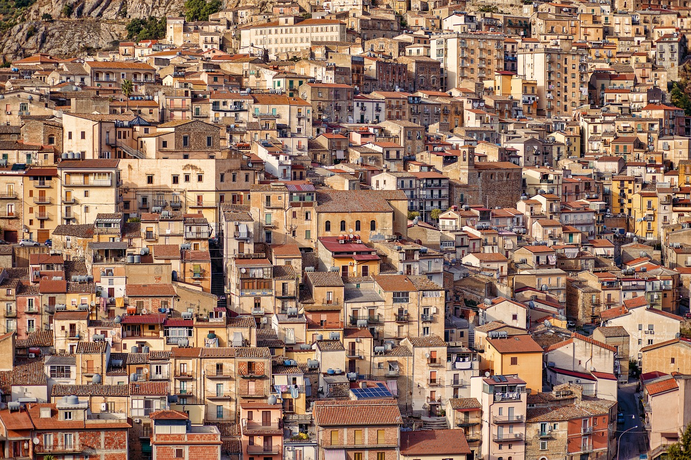

The Minha Casa, Minha Vida Program (MCMV) is a nationwide housing initiative in Brazil that was launched in 2009. The program aims to address several important goals, including building homes to accommodate growing populations, constructing modern housing, and providing essential services such as water supply, sewage systems, and electricity.
This program also aims to assist specific groups, including individuals with disabilities, the elderly, children, and those who have lost their homes due to natural disasters, in gaining access to adequate shelter.
There have been criticisms of the program. Some residents living in houses constructed through the program have reported that their shelters are inadequate. Additionally, there have been complaints about the locations of these houses, which are often situated in areas prone to violence. Others have also expressed concerns about the long waitlist to receive a house under the program.